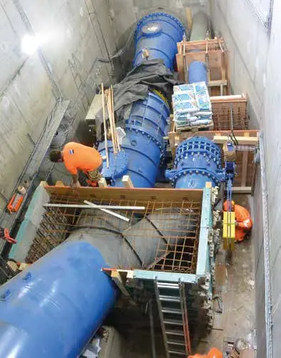
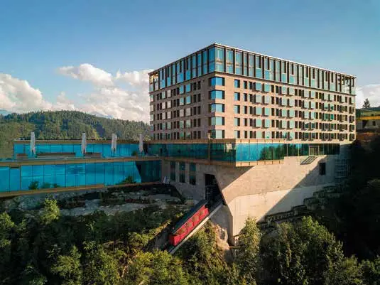
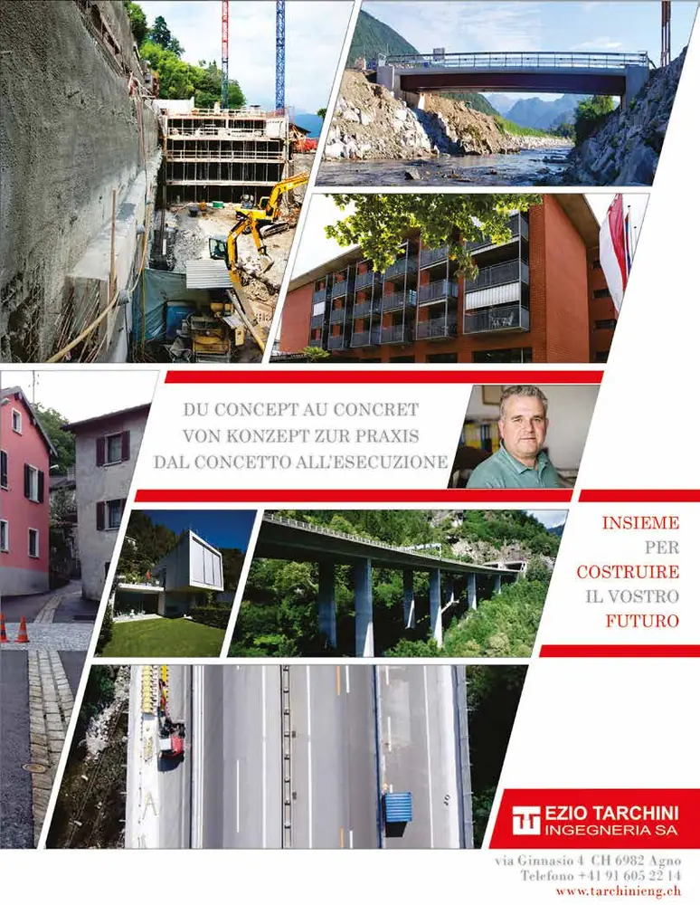

Collectivités · 2018 · Vaud, Berne, Fribourg, Neuchâtel, Tessin
Swiss Knowhow – Directeurs cantonaux des travaux publics 2018
Dossier de juin 2018 consacré aux directeurs cantonaux des travaux publics et à leurs services. Il réunit des entretiens avec des conseillers d’État, architectes cantonaux et ingénieurs cantonaux de Vaud, Berne, Fribourg et Neuchâtel sur l’aménagement du territoire, la mobilité, le patrimoine bâti et la transition énergétique. Une trentaine de profils d’entreprises de construction, de bureaux d’ingénieurs et de spécialistes de l’énergie ou de l’environnement complètent le numéro, jusqu’au Tessin.
Sommaire · 38 articles

Optimiser l’aménagement du territoire et la transition énergétique
Interview de la conseillère d’État vaudoise Jacqueline de Quattro
 Interview
InterviewL’État de Vaud est un grand bâtisseur
Trois réalisations architecturales emblématiques – M. Emmanuel Ventura, architecte cantonal

Les vastes chantiers de la mobilité – DGMR : voir loin et gérer l’immédiat
Entretien avec Pierre-Yves Gruaz, directeur général de la mobilité et des routes

Farmwood SA – Le spécialiste de la construction grande portée en bois fête ses 20 ans
Company profile
ADV Constructions SA – Entreprendre ensemble... autrement
Company profile
 Publireportage
PublireportageBA Consulting SA – L’ingénierie conseil des installations sanitaires et apparentées
Company profile

Archeodunum – Des investigations archéologiques au service de l’aménagement du territoire
Company profile
 Publireportage
PublireportageChabloz & Partenaires SA – Un spécialiste de la construction bois et de la sécurité incendie
Company profile
 Publireportage
PublireportageCinelec SA – Profitez de l’électricité en toute sécurité
Company profile (publié dans les dossiers Vaud et Fribourg)
 Publireportage
PublireportageClot Constructions SA – Spécialistes de la polyvalence
Company profile
 Publireportage
PublireportageDigitalRoad SA – Lire la route pour mieux la connaître
Company profile

Ecoscan – Un expert en environnement depuis 30 ans !
Company profile

PublireportageEmch & Berger SA – La force d’un grand groupe au service du client
Company profile
Freyssinet SA – La référence du génie civil spécialisé
Company profile
 Publireportage
PublireportageStrateg SA – Entreprise totale pour projets immobiliers
Total services contractor for real estate projects (français et anglais)
Prodo SA – Pour des routes durables
Company profile
Ziel sind langfristige Gebrauchswerte, das heisst Gebäude, die sich lange Zeit gut nutzen lassen sowie gut erneuert und umgebaut werden können
Interview mit Angelo Cioppi – Co-Vorsteher des Amts für Grundstücke und Gebäude / Kantonsbaumeister
Tiefbauamt des Kantons Bern: «Das Berner Modell findet auch ausserkantonal Nachahmer»
Interview mit Stefan Studer, Kantonsoberingenieur / Amtsvorsteher
ENGIE Services AG
Im Gespräch mit Stefan Oswald, Leiter Marktgebiet West
Kellerhals+Haefeli AG: «Wir liefern die geologisch geotechnischen Grundlagen als Projektierungsbasis»
Interview mit Reto Wagner, Dipl. Geologe, Vorsitzender der Geschäftsleitung

InterviewGlas Trösch Holding AG: «Wir lösen alles, was in der Architektur mit Glas vorstellbar ist»
Interview mit Fabrice Nussbaumer, Head Global Marketing
 Interview
InterviewRöthlisberger AG – Die Schreinermanufaktur
Im Gespräch mit Geschäftsleiter Adrian Röthlisberger
 Interview
InterviewVigier Beton Nordwest
Im Gespräch mit Unternehmensleiter Bruno Müller
Un patrimoine à entretenir et développer
Entretien avec Gian Carlo Chiovè, architecte cantonal et chef du service des bâtiments
Un canton de 450’000 habitants à l’horizon 2050
Tour d’horizon avec Giancarla Papi, cheffe du service des constructions et de l’aménagement
 Publireportage
PublireportageAntiglio SA – Expérience et compétitivité au service de la construction
Company profile
 Publireportage
PublireportageBersier SA Gravière de Ménières – Graviers et sables de qualité
Company profile
Energil Sàrl – Votre conseil pour l’exploitation des installations techniques
Company profile
Geotherm SA – Le spécialiste de la technique de forage
Spezialistin im Bereich Erdwärme (français et allemand)

Forum Fribourg – Votre partenaire événementiel
Ihr Veranstaltungspartner (français et allemand)
Soleol SA – Energy Systems
Company profile
Mobilité, aménagement du territoire et stratégie énergétique 2050
Interview de Laurent Favre, conseiller d’État neuchâtelois
Service des bâtiments – Voir loin et retrousser les manches
Yves-Olivier Joseph, architecte cantonal
 Interview
InterviewService des ponts et chaussées – Les grands projets cantonaux neuchâtelois
Entretien avec Nicolas Merlotti
 Publireportage
PublireportageAJS ingénieurs civils SA – Une nouvelle prestation en matière de sécurité routière
Company profile
Quirici Frères SA – Électriciens de confiance
Company profile
Celio Costruzioni SA – Partner globale su misura
Company profile – Ticino
Tech-Insta SA – Le sue competenze nel campo dell’impiantistica e nella gestione dell’energia
Company profile – Ticino
Entreprises de ce numéro · 41
ADV Constructions SA
Bâtiment et génie civil

AJS Ingénieurs civils SA
Bureau d’ingénieurs civils
Amt für Grundstücke und Gebäude (AGG) des Kantons Bern
Administration cantonale – immeubles et constructions
Antiglio SA
Bâtiment et génie civil
Archeodunum SA
Archéologie préventive
BA ConsultinG SA
Ingénierie des installations sanitaires et apparentées
Bersier SA Gravière de Ménières
Extraction de sables et graviers
Celio Costruzioni SA
Génie civil et bâtiment
Chabloz & Partenaires SA
Ingénieurs-conseils – construction bois et sécurité incendie

Cinelec SA
Contrôle des installations électriques
Clot Constructions SA
Maçonnerie et génie civil
Département du développement territorial et de l’environnement – République et Canton de Neuchâtel
Administration cantonale – territoire, mobilité et énergie
Département du territoire et de l’environnement (DTE) – État de Vaud
Administration cantonale – territoire, environnement et énergie
DigitalRoad SA
Diagnostic numérique des réseaux routiers
Direction générale de la mobilité et des routes (DGMR) – État de Vaud
Administration cantonale – mobilité et routes

Ecoscan SA
Bureau d’études en environnement
Emch+Berger SA Lausanne
Ingénierie, planification et management de projets
Energil Sàrl
Bureau d’études en énergie et installations techniques
ENGIE Services AG
Technique du bâtiment et services énergétiques
Farmwood SA
Construction de bâtiments à grande portée en bois

Fontana Print SA
Imprimerie
Forum Fribourg (Expo Centre SA)
Centre d’expositions et d’événements
Freyssinet SA
Génie civil spécialisé – précontrainte et réparation d’ouvrages
Geotherm SA
Forages géothermiques et recherche d’eau
Glas Trösch Holding AG
Fabrication et transformation du verre
Kellerhals+Haefeli AG
Géologie appliquée et géotechnique
Office fédéral des routes (OFROU)
Administration fédérale – routes nationales

Prodo SA
Bitumes et entretien des revêtements routiers
Progin Grégoire
Quirici Frères SA
Électricité, télématique et photovoltaïque
Röthlisberger AG – Die Schreinermanufaktur
Menuiserie et agencement intérieur
Service des bâtiments – État de Fribourg
Administration cantonale – patrimoine immobilier
Service des bâtiments – République et canton de Neuchâtel (DFS)
Administration cantonale – patrimoine immobilier
Service des constructions et de l’aménagement (SeCA) – État de Fribourg
Administration cantonale – aménagement du territoire
Service Immeubles, Patrimoine et Logistique (SIPAL) – Division architecture et ingénierie
Administration cantonale – patrimoine immobilier
Soleol SA
Installations solaires photovoltaïques
Strateg SA
Entreprise totale pour projets immobiliers

Studio d’ingegneria Ezio Tarchini SA
Bureau d’ingénierie civile
Tech-Insta SA
Installations techniques du bâtiment et de l’industrie
Tiefbauamt des Kantons Bern
Administration cantonale – ponts et chaussées
Vigier Beton Nordwest
Béton, mortiers et granulats
Aucun résultat.